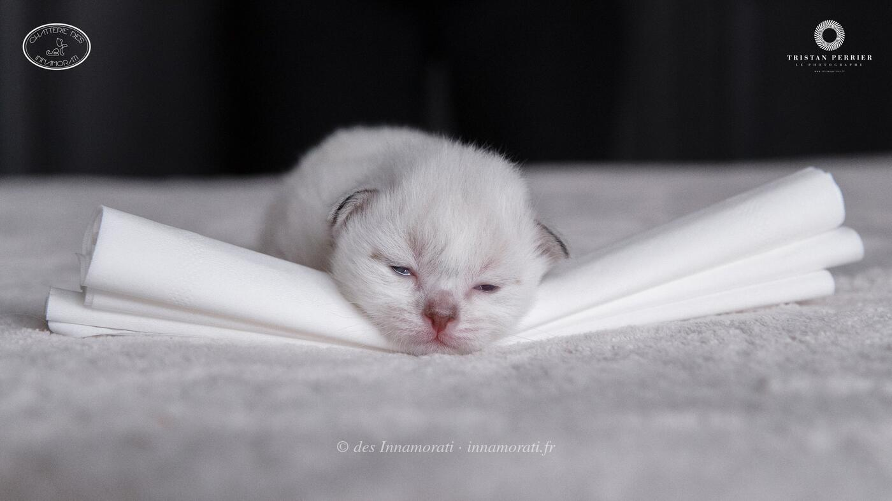

RobeMâle
Naissance5 mars 2018
StatutAdopté
Album9 photos, de mars 2018 à février 2019


Photos réduites et marquées. Elles appartiennent à la Chatterie des Innamorati et ne peuvent pas être reprises dans une annonce.

Photos réduites et marquées. Elles appartiennent à la Chatterie des Innamorati et ne peuvent pas être reprises dans une annonce.